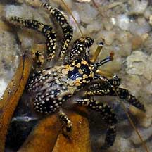
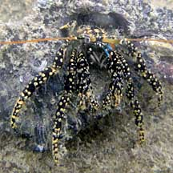
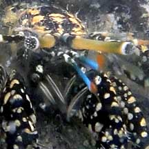
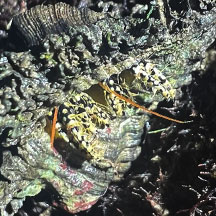

|
|
| hermit crabs text index | photo index |
| Phylum Arthropoda > Subphylum Crustacea > Class Malacostraca > Order Decapoda > Anomurans > hermit crabs > Clibanarius |
| Gold-spotted
hermit crab Clibanarius cruentatus Family Diogenidae updated Dec 2019 Where seen? This pretty black hermit crab is sometimes seen, in coral rubble near reefs. It seems to be more active at night. Elsewhere, it is said to be a very common intertidal hermit crab living in sand-mud bottoms in mangrove areas, pebble beaches and rocky shores. Features: Body about 1-1.5cm long. Body and legs black with large orange, yellow, white spots. Towards the eyes, spots are larger and more orange. Both pincers are more or less equal in size and held so that the 'fingers' open horizontally in front of the animal. Pincers and walking legs sparsely hairy. Eye black with tiny white spots, narrow white ring under the eye where it joins the stalk. Eyestalks all yellow. Short antennae bright blue with orange feathery tip. Long antennae orange. More on how to tell apart Clibanarius hermit crabs. |
|
 Sentosa, Jun 04 |
 Tanah Merah, Dec 10 |
 |
*Species are difficult to positively identify without close examination.
On this website, they are grouped by external features for convenience of display.
| Gold-spotted hermit crabs on Singapore shores |
On wildsingapore
flickr
|
| Other sightings on Singapore shores |
 Seringat Kias, Sep 25 Photo shared by Kelvin Yong on facebook |
|
Acknowledgements
References
|